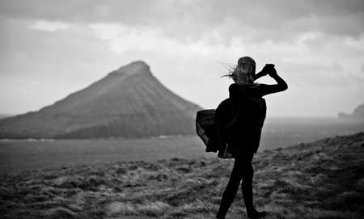

Torsdag 15. desember kl. 19.30
Nye færøske kortfilm af Andrias Høgenni, Anton Petersen, Dennis Agerblad, Franklin Hendriksen, Heiðrik á Heygum, Katrin Ottarsdóttir, og Mariannu Mørkøre & Rannvu Káradóttir
Pris 80 kr.
Skýming - Anton Petersen
Ávegis - Andrias Høgenni
Alda reyð & Needle and String - Heiðrik á Heygum
Last Song - Katrin Ottarsdóttir
Magma, Amohr, Marra, Irra - Marianna & Rannvá
Barbara í Gongini - Marianna Mørkøre
BIG - Marianna Mørkøre
Bow - Rannvá Káradóttir
Vón & Málhøvd - Dennis Agerblad
Mens vi venter - Franklin Hendriksen
Mary D - Jákup Veyhe / Uni Debess
www.nlh.fo
|